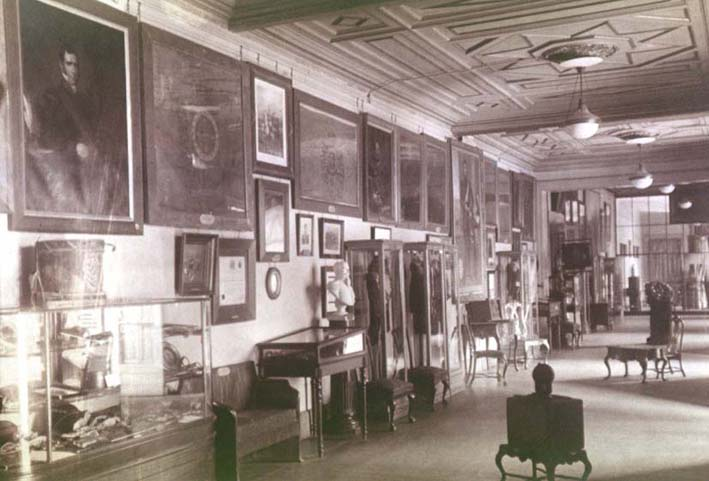

|
|  |
|
Museo Histórico Nacional, salón de la Independencia
|
Even after the first democratic-populist governments seized political power in the twentieth century, the historical narratives put forward by the heritage institutions often remained a stronghold of the most conservative and elitist versions of the national past. In Argentina, following the death of founding director Adolfo P. Carranza and, shortly afterwards, of his successor Juan A. Pradère, the academic Antonio Dellepiane assumed the leadership of the National Historical Museum in 1916, the same year the candidate of the Civic Radical Union, Hipólito Yrigoyen, sensationally won the presidential elections. Even though Dellepiane removed strict boundaries between exhibition and visitor space, as in the 'Independence Room' shown on the above photograph from 1918, where visitors are drawn into 'museal space' by the period furniture that spreads out into the showroom, suggesting a domestic interior, the contents of this 'home of national memory' were still almost exclusively the family trophies of the Creole oligarchy, whose ancestors the exhibition crafted into a national pantheon, encouraging visitors, in Dellepiane´s words, to make 'judgments of historical value, to punctuate events, and hierarchise historical personalities.'
|